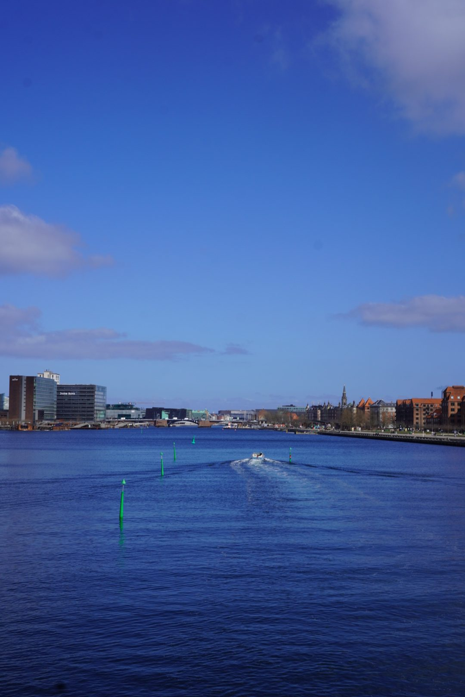
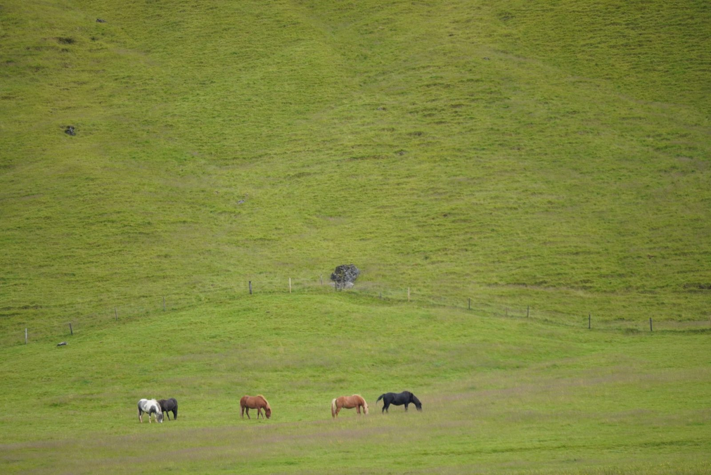
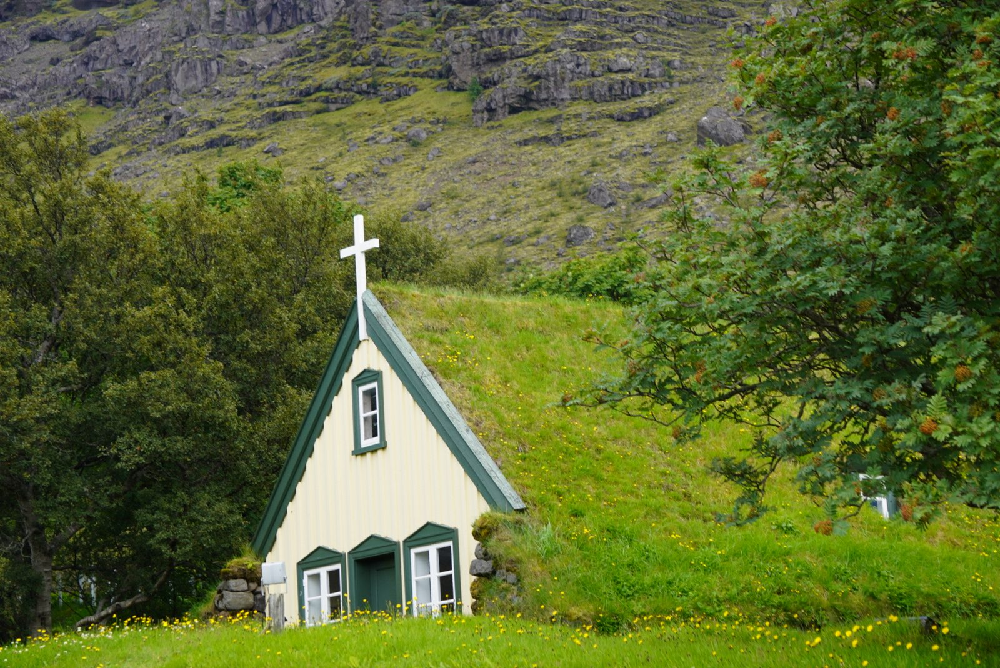
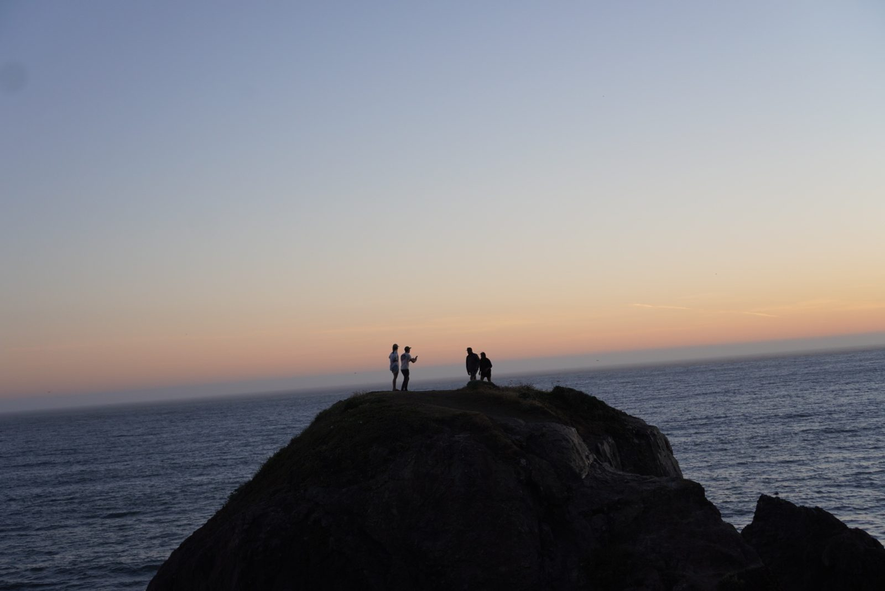

Water chemistry, pollution response, and the data systems behind environmental decisions. A planter of gardens and a believer in tomorrow.
Plans, models, and tools for the parts of climate work that decide who gets protected and who pays.
Lead author. Coordinated 110 plus federal, state, tribal, and industry partners into one plan California can act on, integrating renewable fuels, lithium-ion, and offshore wind preparedness.
See it at OSPR →
Capstone at UC Berkeley, with Spark Climate Solutions. A stress test that found the mechanism failed before the math did, then pointed somewhere better.
Open the project →
The companion to the land-empire study. Pipelines, wells, refineries, and platforms that the public record documents but no single agency presents whole.
Open the map →
Essays and shorter pieces on climate, oil, and the systems that respond to disaster.
The political ecology of organized catastrophe. How three federal disaster programs were dismantled in 2025, and what that engineers for the next Gulf storm.
California's oil infrastructure read as a land-owning business, with the interactive map that assembles it whole.
Cold War waste, California's nuclear legacy, and why contingency stopped being a backup plan and became the plan.
Looser pieces, and the version of an essay I usually write for myself first.
Eight years inside California's environmental agencies, from the lab bench to statewide coordination.
Education. M.S. Climate Change Solutions, UC Berkeley (2026). Professional Certificate, Data Analytics, UC Davis (2023). B.S. Chemistry, Arizona State University, The Honors College (2015).
Certifications. NIMS ICS 100 to 800. SEMS. 48-Hour HAZWOPER. EROS.
Shot on my own camera. Grouped by where I happened to be standing.

The Bay
In the field
The garden
On the water